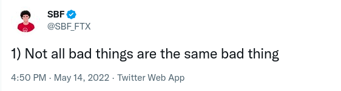

The last 24 hours on crypto-Twitter have been a cacophony of rage, disbelief and whatever toxic stew of emotions exist in the hearts of crypto traders as the crypto exchange FTX has imploded after some FUD lead to actually-its-not-just-FUD-induced-selling/panic of the Chuck-E-Cheese tokens that made up the majority of assets on the balance sheet of the closely related trading desk Alameda Research. It was shortly thereafter that FTX itself was revealed to be insolvent, with a hole likely billions deep. More competent people than me will surely be releasing detailed postmortems in the coming days with the technicals of how this happened, though I’m almost sure it will boil down to some very, very brazen lies about what was being done with peoples money. Instead I’d like to talk (at bro-science level) about the pathology of the just spectacular lineup of characters who did totally legitimate business are are now totally not trying to evade authorities.
I’ve written previously on my lightweight adventures in crypto, and though I’ve been out from a financial standpoint since ETH was $2000 and still had one more dance with $4000 left in it, I follow the various personalities in the crypto space, partly from a morbid interest in the strange specimens that inhabit the space, and partly from a lingering belief that there just might be something to crypto.
Since I began to exit my crypto holdings, I’ve been a pretty big cynic about the space, however out of some (possibly misplaced) desire to maintain a nonzero level of optimism, I look for the honest, –or at least non-cringe– players in the space. The ones who will still be around if the meme-fueled casino ever decides to offer something of value.
I initially found two candidates for groups of crypto people (sorry cryptographers, they are the crypto people now) that would let me proudly say I never completely lost faith in crypto once we are all paying our taxes in digital currency issued by His Excellency. These groups can be roughly categorized as the degens and the (self-proclaimed) builders.
In a result that reveals the true heart of crypto, the degens are the ones that still make me smile about crypto. They are lone-wolf traders, brash, pugnacious, but harmless; refreshingly self-aware and under few illusions (few, not none, as the FTX implosion has shown) about the game they are playing. It is just that to them – a game, and most seem to just be having fun and don’t wish anything bad on anyone. The most they might be blamed for is that they serve as an extra light that lures hapless retail traders into the electrified mesh. Finally, to their credit, I believe that until now they were not fooled by the latter group.
The second group, consisting of high-profile heads of exchanges, trading desks and other crypto ‘services’, never gave me the warm fuzzy feeling that the degens did, but boy did they try. Their Twitter accounts are (were) non-stop thread-presses, expounding their deep philosophical and technical wisdom. However the last year has exposed many of these characters (through the collapse of their projects, not just batshit tweets) as nothing more than reckless –though sufficiently intelligent– gamblers with massive egos.

Every time one of them posted these insufferable threads clearly meant to keep their sense of self-importance fully inflated, I would try –as I did with the whole crypto space– to maintain a bit of belief that I might be being too cynical, that these people really were trying their best to build something good, but were possibly deluded about the fact that they were just in the ponzi-as-a-service industry. I said “hey if Sam Bankman-Fried is just transferring money from gamblers to animal-welfare causes (he wasn’t), then I guess I’m okay with that”.
Never has my cynicism been more validated, and no doubt more validation is to come as the tide continues to recede. The more shocking thing is that these people, after they have been revealed as intellectual and legal frauds, continue to post Twitter threads about what they have learned and how they wish to impart their newfound wisdom as a result of the mistakes they’ve made rough times they’ve endured.
Something that keeps me reading their insane rants is a morbid desire to know whats going on in there. When, after incinerating people’s money, they try to explain their remorse and how they had the best intentions, what is their intent?
genuinely explain to people how things went bad, but that they didn’t want to hurt anyone- They have drunk their own Kool-Aid and are trying to prevent the air from rushing out of their inflated sense of self-worth.
- Setting up for the next con .
- Make tweets that sound good, hope that they appear in court as evidence, and that that might help them?
I know its not healthy to spend too much time contemplating this, but you do sometimes just want to see the mask fall of and have them brokenly admit a-la Crime and Punishment that they are the murderer. The people such as His Excellency Justin Sun, though grotesque, at least have the advantage of being so outrageous that there is never any doubt that they are just pure grifters, obtaining their adrenaline rush from getting over on people and spitting in the face of fate.
The worst part is that the FTX blowup seems to have been the last straw for the degens. On Twitter, they seem exhausted, dejected, ready to call it quits. Their humorous banter is no longer there when I’m sipping coffee in the morning. Who now will bring a smile to my face about crypto?